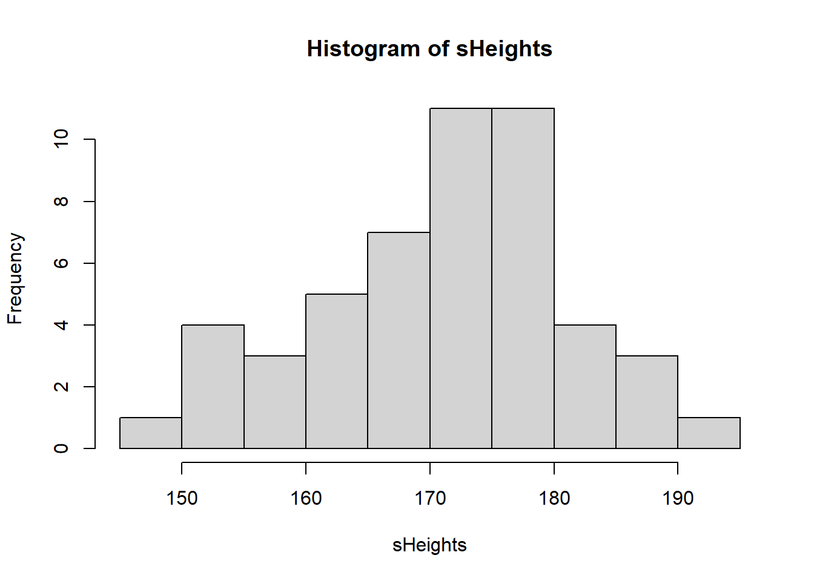
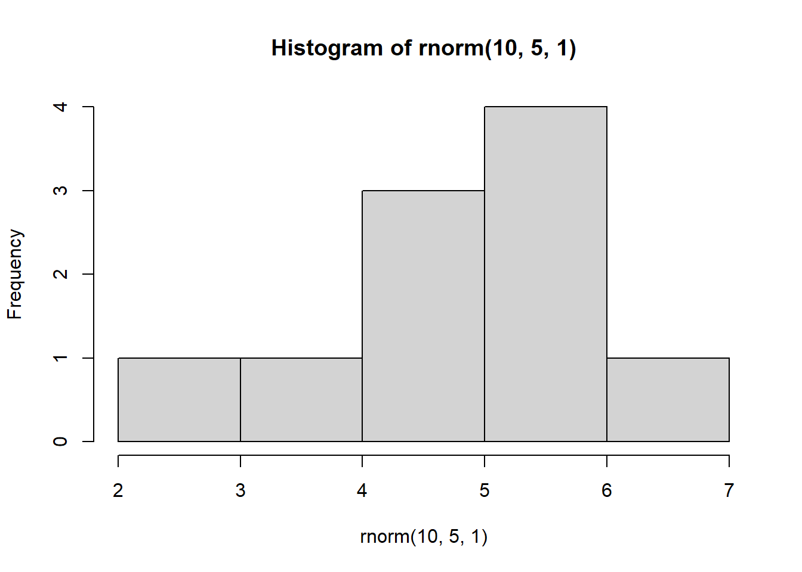

popHeights <- rnorm(100000, 170, 10)Practical 2 - Experimental design
Sampling data and more
Learning Outcomes (LOs)
Here’s what you should know and be able to do after completing this practical:
LO1: Explain different sampling methods
LO2: Write code to perform different sampling methods
LO3: Simulate data, including from different distributions
LO4: Run a basic loop
LO5: Set a “seed” and explain what it does
LO6: Explain how increased sample size affects estimates (of things like mean values)
LO7: Subset data using subset() and indexing
LO8: Explain the importance of replication
TUTORIAL
Simulating data and distributions
In this script will we be working with entirely simulated data. In other scripts, we will use more real data, but to exemplify experimental design concepts, it’s actually I think more helpful to work with simulated data.
Let’s imagine a population that consists of 100,000 individuals.
In this first example, we are going to simulate the heights of 100,000 people.
Across the world, people differ in their heights considerably, but on average if you look across all adults, regardless of sex or gender, it’s reasonable to consider a typical mean height of 170 cm with a standard deviation of 10 cm. For examples, see: https://en.wikipedia.org/wiki/Average_human_height_by_country
So, let’s simulate a single variable, which is normally distributed and has a mean of 170 and a SD of 10.
I’m calling this variable popHeights (population heights):
This variable has been created using the rnorm() function, which generates random numbers from a normal distribution
If you want to see how the rnorm function works (or any function for that matter), type “?” followed by the function name:
?rnormWe saw rnorm() in the first script (Practical 1 - Basics of R) but as a reminder:
The rnorm() function has three arguments: n, mean, and sd
n= the number of observations you want to simulatemean= this is the mean value of the normal distribution you want to simulate fromsd= this is the sd of the distribution
If we wanted to, we could plot a quick histogram of the population heights, to take a look:
hist(popHeights)Remember that in most scientific experiments, we wouldn’t collect data from the entire population.
We would instead collect a sample. Let’s look at how to do this:
Suppose we want to measure the heights of a sample of 50 people from our population.
We can use the sample() function. We’ll store the sample of heights in a new object called sHeights:
sHeights <- sample(popHeights, 50, replace = FALSE)Importantly, in the above function I set replace = FALSE. This is to tell R that once an individual has been selected, they cannot be selected again. This is known as sampling without replacement and is typical for real world surveys, because you may not want to sample the same person’s height twice.
If I were to set replace = TRUE, this would simulate sampling with replacement: after selecting an individual, that person is returned to the population and could be chosen again.
Scientists sometimes do this in simulations to see how results might vary if we repeated an experiment.
You don’t need to worry about this for now — just know that it exists.
Lets look at our sample distribution:
hist(sHeights)
We could, if we wanted to, calculate the mean of our sample:
mean(sHeights)[1] 171.263We will explore sample distributions in more detail later. For now, let’s simulate a slightly more realistic scenario - one where we don’t just collect data on 1 variable, but on a few different variables.
Let’s imagine a population of 100,000 humans who all have different heights, weights, ages, etc.:
population <- data.frame(
height = rnorm(100000, 170, 10),
weight = rnorm(100000, 65, 10),
age = rnorm(100000, 40, 15),
systolic_bp = rnorm(100000, 120, 15),
diastolic_bp = rnorm(100000, 80, 10),
cholesterol = rnorm(100000, 5, 1),
gender = sample(c("Male", "Female", "Other"), 100000, replace = TRUE, prob = c(0.49, 0.49, 0.02)),
ethnicity = sample(c("White", "Black", "Asian", "Other"), 100000, replace = TRUE, prob = c(0.3, 0.3, 0.3, 0.1)),
university = sample(LETTERS[1:10], 100000, replace = TRUE, prob = rep(0.1, 10))
)This simulation should take less than 1 second. R can handle very large datasets very quickly!
Let’s make sure we tell R that the gender, ethnicity, and university variables are all categorical (factors):
population$gender <- as.factor(population$gender)
population$ethnicity <- as.factor(population$ethnicity)
population$university <- as.factor(population$university)For gender, we’ve simulated a population where 49% of people are male, 49% are female, and 2% identify as another gender (e.g., non-binary, transgender, etc.).
For ethnicity, we’ve simulated a scenario where 30% of people are White, 30% are Black, 30% are Asian, and 10% belong to other ethnic groups.
NOTE: These gender and ethnicity proportions are entirely hypothetical and are not intended to reflect real-world population data.
We’ve also simulated these people all attending one of 10 different universities.
Let’s take a look at the first few rows of the dataset we just created:
head(population) height weight age systolic_bp diastolic_bp cholesterol gender
1 181.8917 65.95659 54.043762 136.72015 76.27696 6.751264 Male
2 152.3525 69.73649 41.885823 121.98966 91.00437 4.852896 Male
3 161.9172 51.98096 28.842420 89.06611 86.36814 4.673087 Male
4 175.1414 72.10186 9.956617 110.30854 77.83300 6.643298 Male
5 165.9646 61.66644 27.424063 110.96473 73.16775 5.290861 Male
6 184.8499 64.55127 14.819444 124.52521 80.13347 3.699011 Male
ethnicity university
1 Other F
2 Asian F
3 White G
4 White I
5 Black D
6 Black INow we can start looking at some of the possible sampling strategies we might use to sample from this population.
Random sampling
Pick 30 individuals at random from the entire population.
First we create an object called rowNums. In this we store 30 random numbers from 1:100000:
rowNums <- sample(1:100000, 30, replace = F)Then, we use that to select which rows to choose when performing indexing on our population:
random_sample <- population[rowNums, ]Let’s look at the first few of these randomly sampled individuals:
head(random_sample) height weight age systolic_bp diastolic_bp cholesterol gender
4653 169.7799 73.37108 62.72067 104.5133 64.65091 4.631331 Female
11246 184.7911 66.92005 59.24338 119.6797 81.44419 6.266655 Female
34408 180.0082 57.18565 44.89194 113.0768 85.72993 6.560816 Male
17171 172.0403 77.29059 44.31937 131.6149 70.51090 4.887556 Male
95866 164.9999 65.87086 45.13674 100.5497 86.16386 4.251617 Male
42490 185.3999 58.80658 57.34801 112.5643 77.93042 7.105784 Other
ethnicity university
4653 Black H
11246 Other B
34408 Asian E
17171 Black J
95866 White D
42490 Asian JNote that the first column that you see represents the original row numbers within the population
Systematic sampling
Let’s now choose every 100th individual within the population. Let’s start by creating a sequence which takes every 100th individual starting from individual number 1:
seq1 <- seq(1, 100000, 100)Then, we use this seq1 in our indexing:
systematic_sample <- population[seq1, ]Let’s look at the first few rows of these:
head(systematic_sample) height weight age systolic_bp diastolic_bp cholesterol gender
1 181.8917 65.95659 54.043762 136.7201 76.27696 6.751264 Male
101 153.8822 73.98783 46.436233 113.2102 77.79679 5.047658 Male
201 152.9155 69.85994 3.292137 132.2375 77.24115 5.789151 Male
301 157.7660 59.62766 30.774110 113.9843 81.75128 4.588415 Male
401 174.3276 75.95124 42.307131 113.4292 74.93412 5.390191 Female
501 165.3558 64.54569 -6.853938 108.5050 72.25534 6.938712 Female
ethnicity university
1 Other F
101 Asian C
201 Black J
301 Asian C
401 Asian I
501 Other IStratified random sampling
In stratified random sampling we want to take a sample that proportionally represents the population.
Let’s look at taking a stratified random sample according to gender.
Before we take a sample, we need to work out how many individuals we have of each gender. The table() function is good for this:
table(population$gender)
Female Male Other
49051 48944 2005 So this is how many individuals we have of each gender. But what about as a proportion?
For this we can apply the prop.table() function to this table:
prop.table(table(population$gender))
Female Male Other
0.49051 0.48944 0.02005 So we have 48.634% female, 49.306% male, and 2.06% other.
To keep things simple, let’s round these numbers to whole percentages: 49%, 49% and 2%.
We can now use those values to perform our stratified random sampling.
Imagine we wanted a sample of 100 individuals in total. To keep our sample proportionally representative of the population, that would mean we have 49 male, 49 female, and 2 other.
Here’s one way to do this. First, create some subsets:
male <- subset(population, gender == "Male")
female <- subset(population, gender == "Female")
other <- subset(population, gender == "Other")Now, we can randomly sample 49, 49, and 2 individual from these respectively:
sMale <- male[sample(1:nrow(male), 49, replace = FALSE), ]
sFemale <- female[sample(1:nrow(female), 49, replace = FALSE), ]
sOther <- other[sample(1:nrow(other), 2, replace = FALSE), ]Explanation of the above:
For each gender, we first create a subset of the population.
Then we use
sample()to randomly select the desired number of rows.The
1:nrow(data)part creates a sequence of row numbers that is specific to each dataset so that thesample()function knows which rows to pick from.
We now have our three subsets. We can combine them using rbind(), which stands for “row bind”.
rbind() stacks the datasets on top of each other (adds rows), so all the selected individuals are together in one dataset. This works because all three subsets have the same columns and structure.
stratified_sample <- rbind(sMale, sFemale, sOther)Let’s have a look at this sample either using head() or View():
head(stratified_sample) height weight age systolic_bp diastolic_bp cholesterol gender
41026 163.0809 70.69900 23.99529 121.0283 87.63013 4.546431 Male
55159 169.7011 44.96024 81.78328 120.0054 77.30928 5.193442 Male
97107 167.0441 69.72781 31.83209 132.2845 78.10886 5.986965 Male
95298 169.7894 58.40553 39.36326 123.5954 63.41858 5.950757 Male
65343 181.0432 68.40817 37.29478 117.4471 79.47869 4.785539 Male
32980 171.3221 70.93626 26.34709 143.2521 91.34546 3.977288 Male
ethnicity university
41026 Black H
55159 White H
97107 Other G
95298 White G
65343 Asian H
32980 Black EView(stratified_sample)Quota sampling:
We can use a very similar approach to perform quota sampling.
Let’s assume we want data on 5 individuals from each ethnicity.
First, create ethnicity subsets:
Asian <- subset(population, ethnicity == "Asian")
Black <- subset(population, ethnicity == "Black")
White <- subset(population, ethnicity == "White")
Other <- subset(population, ethnicity == "Other")Now select 5 individuals from each subset:
sAsian <- Asian[sample(1:nrow(Asian), 5, replace = FALSE), ]
sBlack <- Black[sample(1:nrow(Black), 5, replace = FALSE), ]
sWhite <- White[sample(1:nrow(White), 5, replace = FALSE), ]
sOther <- Other[sample(1:nrow(Other), 5, replace = FALSE), ]And again rbind() them:
quota_sample <- rbind(sAsian, sBlack, sWhite, sOther)Have a look, this time just print the entire dataset as it’s only small (20 individuals):
quota_sample height weight age systolic_bp diastolic_bp cholesterol gender
66546 173.6025 65.00084 47.53982 109.6991 93.29653 5.238933 Female
59742 188.7630 53.85722 47.09415 117.3835 73.97170 3.052515 Male
89278 191.3660 55.22209 16.05946 124.1786 86.84495 4.718466 Male
38398 169.1332 62.30335 42.91705 126.4840 83.46747 3.161352 Female
49287 171.4612 68.06520 45.68254 126.2581 63.05222 3.301955 Female
34276 195.7192 61.38782 48.57233 121.3732 102.17456 5.249173 Male
46415 164.5650 66.82846 32.71044 137.0233 88.01298 4.953049 Female
56297 179.5274 71.38645 42.22164 107.8484 90.41166 5.612718 Female
3843 193.7212 61.34739 46.56138 107.6604 73.73065 3.822007 Female
37406 157.2184 49.27461 22.60050 121.9938 61.83209 4.713379 Male
48112 169.0804 62.32836 75.49070 141.8244 96.73715 5.175702 Male
98442 172.1584 71.47122 36.99733 145.7300 63.61692 4.495889 Male
87550 177.0591 55.39918 35.61092 116.5942 76.22142 4.509009 Male
78117 168.9749 74.80501 31.51017 116.2274 85.85864 3.765290 Male
51190 169.1691 80.52377 40.78356 120.7377 75.10947 5.701031 Female
43518 163.3178 67.07632 51.71008 116.4906 67.72671 6.632093 Female
68953 173.7001 73.49131 25.22929 129.7150 84.22430 4.068652 Female
75349 175.6710 64.12274 29.81824 118.2672 95.02906 5.384948 Male
20645 169.8536 58.92705 50.05220 120.7502 69.51482 4.399490 Female
29078 174.2245 77.72705 17.44857 115.0675 77.37110 4.892672 Male
ethnicity university
66546 Asian E
59742 Asian C
89278 Asian B
38398 Asian D
49287 Asian B
34276 Black H
46415 Black B
56297 Black B
3843 Black F
37406 Black B
48112 White A
98442 White B
87550 White G
78117 White H
51190 White G
43518 Other I
68953 Other A
75349 Other H
20645 Other I
29078 Other GCluster sampling:
Finally, let’s take a look at cluster sampling.
This is where we might select only a few specific clusters (characteristics), but include all individuals who have those characteristics. For example, let’s imagine we only wanted to look at people who went to three different universities (university A, B, and C):
A <- subset(population, university == "A")
B <- subset(population, university == "B")
C <- subset(population, university == "C")In cluster sampling, we collect data on all individuals from those clusters. So we don’t need to perform any further sampling, we just rbind() the entire three clusters together:
ABC <- rbind(A, B, C)Now we can have a look at it:
head(ABC) height weight age systolic_bp diastolic_bp cholesterol gender
25 160.9578 76.54681 29.75255 128.2268 79.00476 5.783385 Male
26 155.6095 53.22573 47.03772 105.5600 79.58648 5.425473 Female
27 180.7766 69.03992 66.54862 117.5942 72.96604 4.005896 Female
36 163.4919 79.29393 22.46824 113.0934 96.06150 4.308785 Male
44 162.7147 69.23167 27.00450 102.5662 80.19901 5.043619 Female
54 174.8940 72.48711 41.74273 95.3446 96.78921 3.311160 Female
ethnicity university
25 White A
26 White A
27 White A
36 Asian A
44 White A
54 Other Atail(ABC) height weight age systolic_bp diastolic_bp cholesterol gender
99927 175.4463 75.44739 42.956506 122.65891 80.68062 5.469707 Female
99929 170.6889 77.88772 45.373440 98.72096 62.88210 5.031693 Male
99934 157.8411 58.80335 50.913249 142.86610 85.94856 7.020991 Female
99969 180.2466 63.48501 34.314829 111.83394 65.75705 4.969786 Female
99976 177.2251 87.76495 38.609772 121.16693 65.15839 4.654630 Female
99985 174.5995 66.53489 -1.957121 120.00469 84.89809 5.008957 Male
ethnicity university
99927 White C
99929 Black C
99934 White C
99969 Asian C
99976 White C
99985 Asian Ctable(ABC$university)
A B C D E F G H I J
10064 10205 10135 0 0 0 0 0 0 0 Notice how even though there are no longer any observations in the D-J universities, those categories still exist?
We can remove empty categories by using the droplevels() function:
ABC <- droplevels(ABC)Now look again:
table(ABC$university)
A B C
10064 10205 10135 Simulating data from different distributions
So far, whenever we have simulated numerical data, we have used the rnorm() function
This will specifically simulate data from a normal distribution.
Let’s have another quick look at this: let’s simulate 100 normally distributed height observations
heights <- rnorm(n = 100, mean = 170, sd = 10)We can look at this distribution using hist()
hist(heights)
R can simulate data from many different distributions. Let’s look at a few examples.
Poisson Distribution
The Poisson distribution models count data (whole numbers like 0, 1, 2 etc.).
It has a single parameter, lambda, which determines both the mean and the variance.
An obvious biological example of count data are the number of eggs a bird lays.
Here we simulate 100 random numbers from a Poisson distribution with lambda = 2:
pois <- rpois(n = 100, lambda = 2)Again, we can visualise the simulated data with a histogram:
hist(pois, main = "", xlab = "Number of eggs laid", las = 1)Binomial Distribution
The binomial distribution models data that exists in one of two categories, e.g., success/failure.
Biological example: We have 100 people suffering from pain and we want to test if a drug can reduce it.
rbinom() parameters:
n= number of individuals we are simulating (100 here)size= number of “trials” per individual (1 if they get the drug once)prob= probability of success on each trial (probability the drug works)
Example 1: Drug has 50% chance to reduce pain
binom <- rbinom(n = 100, size = 1, prob = 0.5)
hist(binom, main = "", xlab = "0 = Same pain, 1 = Reduced pain", las = 1)Example 2: Drug has 75% chance to reduce pain
binom2 <- rbinom(n = 100, size = 1, prob = 0.75)
hist(binom2, main = "", xlab = "0 = Same pain, 1 = Reduced pain", las = 1)Example 3: Each person gets 2 doses of the drug (size = 2)
The number now represents how many times the drug successfully reduced pain out of two attempts.
Assuming that on both attempts the chance of reducing pain was 75%:
binom3 <- rbinom(n = 100, size = 2, prob = 0.75)
hist(binom3, main = "", xlab = "Number of times pain was reduced (0, 1, 2)", las = 1)
Bimodal distribution
You may remember from the exploring data and graphing lecture, I mentioned that spiders are often sexually dimorphic - females are typically larger than males.
For this you will need to install another package (if that doesn’t work, just skip over this bit):
install.packages("FamilyRank")
library(FamilyRank)This distribution needs a total sample size, a mean and SD for each of the two peaks (modes) in the distribution, and a probability value which dictates the probability of being in mode 1.
binorm <- rbinorm(n = 200, # 200 spiders in total
mean1 = 2, # mean for mode 1 (think of male spider diameter in cm)
mean2 = 4, # mean for mode 2 (think of female spider diameter in cm)
sd1 = 0.3, # SD for male spider diameter
sd2 = 0.5, # SD for female spider diameter
p1 = 0.5) # Probability of being a male spider (50%)
hist(binorm, main = "", las = 1, xlab = "Spider diameter (cm)")There are many more possible distributions that data can follow, but we will stop here for now!
Just remember (i) that data can follow different distributions - it won’t always be “normal” and (ii) that for many “Parametric” statistical tests, the tests assume your data are normal - so you must check! We will cover this in detail in the next script.
Examining distributions
Let’s have a look at some averages, and variation, of the distributions created above:
Normal
hist(heights)
abline(v = mean(heights), col = "blue", lwd = 2)
abline(v = median(heights), col = "red", lwd = 2) mean(heights) [1] 170.0839median(heights) [1] 170.6889sd(heights)[1] 10.73436Poisson
hist(pois)
abline(v = mean(pois), col = "blue", lwd = 2)
abline(v = median(pois), col = "red", lwd = 2) mean(pois) # This should be close to 2 [1] 1.9var(pois) # This should be close to 2[1] 1.606061Binom
hist(binom)
abline(v = mean(binom), col = "blue", lwd = 2)
abline(v = median(binom), col = "red", lwd = 2) mean(binom) # This should be close to 50 % [1] 0.45table(binom) # This should be close to a 50/50 split!binom
0 1
55 45 Binorm
hist(binorm)
abline(v = mean(binorm), col = "blue", lwd = 2)
abline(v = median(binorm), col = "red", lwd = 2)
mean(binorm) # The mean of a bimodal distribution is not representative of a "typical" or "average" spider!
sd(binorm)Hopefully this exemplifies that best representation of the “average” value in a distribution isn’t always the mean!
The importance of sample size
Look at what happens when we create a normal distribution with 10, 100, or 1000 observations:
hist(rnorm(10,5,1)) hist(rnorm(100,5,1)) hist(rnorm(1000,5,1))With increasing sample size, the distribution starts to look more normal
We know that in these simulated distributions the mean = 5 and sd = 1.
In theory, with increasing sample size, the estimated mean and SD should get more accurate.
This is because with more data (a larger sample size) we can estimate things more accurately.
mean(rnorm(10,5,1)) [1] 4.825311mean(rnorm(100,5,1)) [1] 5.027543mean(rnorm(1000,5,1))[1] 4.99873sd(rnorm(10,5,1)) [1] 0.8750469sd(rnorm(100,5,1)) [1] 1.05303sd(rnorm(1000,5,1))[1] 0.9799877Let’s do something a little more complex…
We are going to use a “loop” - this is a way of performing repeated instructions over a series of iterations (i).
Before we do this, let’s set up our plotting window so that we have a 2 x 2 array of plots.
We must do this first (before plotting):
par(mfrow=c(2,2)) # This tells R to plot all subsequent plots in a 2 x 2 arrayNow, let’s run a “for loop” to plot 4 histograms, each time with a different sample:
We can interpret this code as follows: For every iteration (i) in iterations 1 to 4, create a histogram of 10 observations drawn from a random normal distribution with a mean = 5 and sd = 1
NOTE: You can run this over and over again, each time it will produce 4 different graphs:
for(i in 1:4) {
hist(rnorm(10, 5, 1))
}
Why does this matter?
This demonstrates the impact of replication. Imagine we were to take only a sample of data that consisted of 10 observations. Depending on which 10 observations we happen to select, our sample could look very different!
Often we only perform an experiment once i.e., we only collect the first sample of 10 observations
In fact, we may want to repeat entire experiments multiple times (known as replication) in order to ensure that our results are robust.
Here’s another example of this:
Suppose we were measuring the height of young trees i.e., saplings (cm)
We won’t know in a real experiment what the true population looks like, but usefully in R we can simulate this.
Let’s assume that the population consists of 1000 saplings, and on average they are 50 cm tall, with SD of 5 cm:
saplings <- rnorm(1000, mean = 50, sd = 5)Let’s imagine now I do an experiment - I sample the heights of just 5 saplings:
saplings1 <- sample(saplings, 5, replace = F)If I now estimate the mean of that sample, what is it?
mean(saplings1)[1] 52.47439Now let’s imagine I repeat that experiment. I go back into the field on a different day and measure 5 saplings again:
saplings2 <- sample(saplings, 5, replace = F)If I now estimate the mean of that second sample, what is it?
mean(saplings2)[1] 51.12288The chances are the means of saplings1 and saplings2 could be quite different to each other and also quite different to the true (simulated) mean of the population
Let’s see what these samples both look like:
Plot to visualize:
par(mfrow=c(1,2))
hist(saplings1, main="Sample 1 (5 saplings)", xlab="Height (cm)", col="lightblue", las = 1)
hist(saplings2, main="Sample 2 (5 saplings)", xlab="Height (cm)", col="lightgreen", las = 1)Depending on what you happened to randomly sample on each occasion, these could look quite different!
In other words, when you repeat exactly the same experiment, you might end up with quite different results.
If you were to repeat this experiment many times, then you could calculate an average sapling height across ALL of your experiments. This would be a much more reliable/robust average than if you’d only done the experiment once.
Now let’s have a look at if I were to do the experiment only twice, but this time collect a much larger sample of data on both occasions:
saplings1b <- sample(saplings, 100, replace = F)
saplings2b <- sample(saplings, 100, replace = F)If we plot them again, we should see that these two distributions now look much more similar:
par(mfrow=c(1,2))
hist(saplings1b, main="Sample 1 (5 saplings)", xlab="Height (cm)", col="lightblue", las = 1)
hist(saplings2b, main="Sample 2 (5 saplings)", xlab="Height (cm)", col="lightgreen", las = 1)And if we were to calculate their means, not only should these both be more similar to each other, they should also both be more similar to what we know to be the true (simulated) mean in the population:
mean(saplings1b)[1] 49.99518mean(saplings2b)[1] 50.0277Setting a seed
This may seem like an odd concept, but sometimes we want to generate a random set of numbers that is always the same set of random numbers!
To do this, we set a “seed”. Think of a seed as a specific instance of R.
The seed can be any number and must be set prior to running a random number generator:
set.seed(1); rnorm(5, 5, 1)[1] 4.373546 5.183643 4.164371 6.595281 5.329508Notice what I have done on the above line is use the semi-colon “;” - This allows me to run two functions on the same line of code, one after the other.
If you run that line of code above again, you will always get the same 5 random numbers!
Compare that to running the below line of code a few times, without setting a seed. You should get a random set of numbers every time:
rnorm(5, 5, 1)[1] 4.179532 5.487429 5.738325 5.575781 4.694612Why is setting a seed useful?
Setting a seed is important for playing with simulations because it ensures results are reproducible every single time. This goes not just for you, but for anyone else running the code.
So, in theory, every single person running the following line of code should get the same set of 5 “random” numbers:
set.seed(1); rnorm(5, 5, 1)[1] 4.373546 5.183643 4.164371 6.595281 5.329508Subsetting data
We have already seen some examples of subsetting data from a previous script, but it’s so useful it’s worth seeing a few more examples:
Let’s create a new, simulated dataset.
This time we’re going to create data on Alzheimer’s patients
We are going to do this using a seed so that everyone sees exactly the same simulated data:
set.seed(1); Alzheimers <- data.frame(neurons = c(rnorm(100, 20, 5), rnorm(100, 20, 5)),
group = rep(c("Asymptomatic","Symptomatic"), each = 100),
sex = c(rep("M", 50), rep("M", 50), rep("F", 50), rep("F", 50)),
age = round(rnorm(200, 70, 5), 0))Note that the “neurons” variable represents the neuron cell density in patients
Have a quick look:
head(Alzheimers) neurons group sex age
1 16.86773 Asymptomatic M 72
2 20.91822 Asymptomatic M 78
3 15.82186 Asymptomatic M 78
4 27.97640 Asymptomatic M 68
5 21.64754 Asymptomatic M 59
6 15.89766 Asymptomatic M 82There are many different ways to subset data:
Selecting for a particular group e.g. Males (all these 4 lines of code achieve the same thing!):
males <- subset(Alzheimers, sex == "M")
males <- subset(Alzheimers, sex %in% "M")
males <- Alzheimers[Alzheimers$sex == "M", ]
males <- Alzheimers[Alzheimers$sex %in% "M", ]Selecting against a particular group:
Asymptomatic <- subset(Alzheimers, group != "Symptomatic")Selecting individuals over or under a certain age:
over70 <- subset(Alzheimers, age > 70)
under70 <- subset(Alzheimers, age < 70)Selecting individuals “greater than or equal to” a certain age:
atLeast60 <- subset(Alzheimers, age >= 60)Selecting individuals “less than or equal to” a certain age:
age58orLess <- subset(Alzheimers, age <= 58)Selecting specific rows from a dataset:
first10 <- Alzheimers[1:10,]
last20 <- Alzheimers[181:200,]Selecting specific rows AND columns:
subset <- Alzheimers[50:100, 1:2] # Select rows 50 to 100, but only data from the first 2 columnsTASKS
Write your own code to complete the following 6 tasks. NOTE: You will not be assessed on these tasks. They are just designed to encourage you to practice.
NOTE: You aren’t expected to remember how to do all of these yet!
HINT: Look back at earlier sections of your script to find the bits of code that you need, and adapt them (that’s the best way to work in R)
NoteTask 1
Write the code to create a randomly generated dataset consisting of observations that follow a Poisson distribution with a mean value of 10. And write the code to plot this distribution.
NoteTask 2
Write the code to execute a loop that plots 4 random poisson distributions where n = 10 and lambda = 2
NoteTask 3
Write the code to subset the Alzheimers data so that you have a sample of 50 random individuals
NoteTask 4
Write the code to plot a histogram of neuron cell density for only Symptomatic Alzheimer’s patients